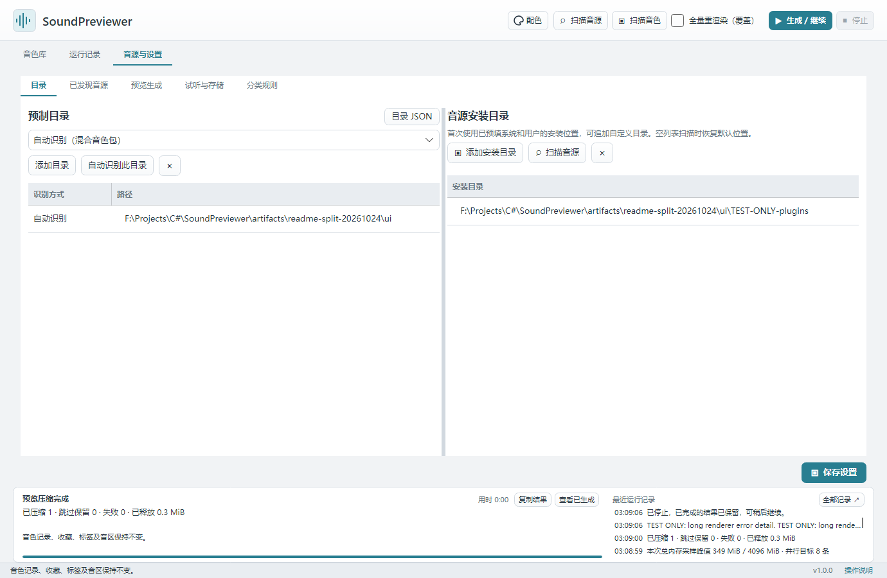
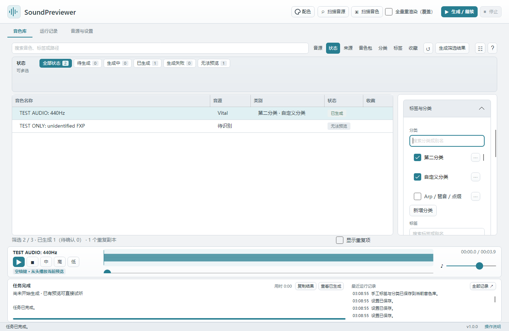

音色库整理
本页内容：
添加目录与扫描
在「音源与设置 → 目录」添加音色所在文件夹。混合音色包可选「自动识别（混合音色包）」，无需先按音源拆目录；也可以明确指定某一种音源。
点击顶部「扫描音色」。主表显示名称、音源、分类和状态；程序只读取原音色文件，不修改它们。
音色库的「来源」选项显示每个路径的音色总数、去重数量、目录内重复副本和跨来源相同音色的数量。跨来源统计也包含主记录所在目录。这里统计扫描索引总量，搜索不会改变它。未勾选「显示重复项」时，所有来源都只显示每组音色的保留项；只含副本的来源可能没有匹配结果，勾选后可查看其文件路径，生成时仍共享同一主记录及缓存。
音色来源与音源安装目录显式保存在程序旁的 Config/directories.json（Windows 与 Portable 为 EXE 旁的 Config，Mac 为 .app 旁的 Config）。音色库定位记录和个人分类规则也集中到 Config。旧根目录 JSON 和 Preview 中的规则会兼容迁入，保留原件，已有 Config 优先。首次使用从原有设置导出，以后启动以该文件为准；「目录」页的修改会同步保存。可点击「目录 JSON」打开，退出程序后编辑并重启。保留 FormatVersion 和已有来源的 Id，可修改 Path、Synth、AutoDetect、Enabled 及 PluginDirectories；音源名称使用 Vital、Serum1、Serum2、Sylenth1 或 Spire。JSON 支持注释、尾逗号，相对路径按程序所在目录解析。文件损坏会明确提示，不覆盖原件；运行中手改文件后应先重启，再在界面保存。

搜索与多选筛选
搜索可查找名称、标签、目录或 MD5。搜索栏旁的「音源 / 状态 / 来源 / 音色包 / 分类 / 标签 / 收藏」是筛选页签；点击某个页签，其选项会在下方固定的三行区域内横向换行显示，更多选项可滚动查看，列表与详情的位置保持不变。
每组都可直接点击多选，无需按 Ctrl 或 Shift。 再次点击取消，选择「全部」清空当前组；页签上的数量表示该组已选项数。同组满足任意选中项，不同组同时满足。例如选择「Vital、Serum 1」和收藏中的「已收藏」，会显示这两种音源中已收藏的音色。切换页签保留其他组的选择，点击「↺」清除全部筛选。
每个筛选选项旁都显示符合数量，包括「全部」与数量为 0 的选项。数量考虑当前搜索、其他组的筛选和「显示重复项」开关，忽略本组已选项，便于继续添加同组条件。例如先筛选 Serum 1，再打开「标签」，数字表示 Serum 1 中符合该标签的音色数。同一个音色可以属于多个分类或标签，各项数字相加允许超过总音色数。
来源选项保留该路径的总量、去重量与跨来源相同音色计数；这些扫描统计不等于当前可见条数，也不会随搜索改变。未勾选「显示重复项」时，重复副本始终隐藏，搜索、来源、状态、音色包、分类、标签或收藏筛选都不会带回副本；勾选后可查看符合当前筛选的其他路径。
分类、标签与收藏
选中音色后点击「编辑标签与分类」，搜索名称或别名并勾选已有选项；列表固定高度，选项较多时滚动查看。点击「新增分类 / 新增标签」添加选项，或点击已有项右侧的「⋯」修改名称和别名。名称必填，别名可留空，用逗号分隔。例如名称 Arp、别名 琶音, 点缀 显示为 Arp / 琶音 / 点缀；无别名时只显示名称。
点击「保存修改」保存勾选；全部取消表示明确清空。重新扫描和自动分类不会覆盖手工选择，「恢复自动」重新采用最近的自动分类。新音色的标签默认无内容，适合记录情绪、用途等个人感受；音源、扩展名和自动分类分别由各自字段表达。旧库中的自定义标签继续保留。收藏和喜欢 / 不喜欢反馈也保存在本地。
默认分类规则可识别 CHORD、CHORDS、CH_ / CH01 前缀和「和弦」，归入 Chord / 和弦。识别遵守词及前缀边界，不因 Chorus、Chart 等普通单词误归类。已有默认规则会补入 Chord，并保留升级前规则副本；个人自定义规则及手工分类继续保留。

定位、复制文件地址与 DAW
选中音色，点击详情里的「复制文件地址」，即可复制原文件的完整本地路径。剪贴板内容是纯文本路径；银行或包内条目复制所属银行／包的实际文件路径，不能复制尚未导出的包内音色地址。只要支持的音色或音色库文件仍存在，即使音源待识别或记录曾标记来源缺失，也可复制；实际文件缺失、地址不完整或无法定位时，此按钮不可用。此操作不移动或改写原音色，也不复制预览音频。
需要查看文件时，可点击「定位音色文件」，在资源管理器或访达中选中原文件。包内条目和银行显示「定位音色库文件」，打开所属银行或包后，再在对应音源中选择需要的条目。
在 FL Studio 中可先添加对应音源，再通过音源或 Wrapper 的加载菜单打开原文件；文件选择窗口支持输入路径时，可粘贴刚复制的地址。复制地址不会自动创建轨道、加载音源或转换成 FL 的 .fst 通道预设。后续仍优先研究 Windows FL Studio 的自动创建与加载，再扩展 Windows / Mac 的 FL Studio、Bitwig 和 Live。具体边界见DAW 音色传递。